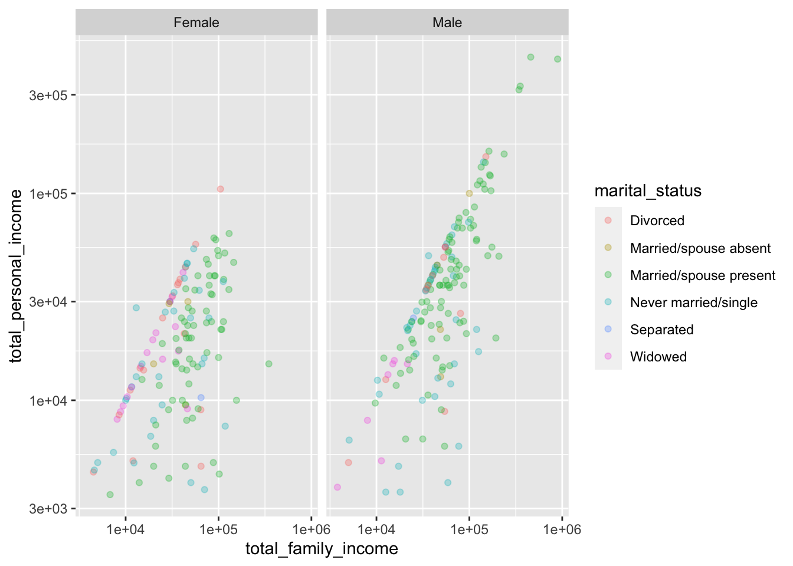

compare_rms_error(dag04, c~ 1, c ~ d, c~ b + d, c ~ a + b + d, n=50, in_sample = TRUE)[1] 1.1800403 1.0320995 0.8710613 0.7991100In dag04, build models to predict c from the other variables. Does one of those variables “block” the others?
[1] 1.1800403 1.0320995 0.8710613 0.7991100d seems to block effect of a and b on c.
We are using in-sample testing because that is often the case in the model-building stage. However, in the model-using stage, things are different. You will be making predictions of new cases, that is, out-of-sample.
For out-of-sample, when working with new data, it’s not just a matter of being tricked into thinking covariates are useful when they’re not. Using irrelevant covariates can be genuinely harmful to the predictions.
Compare these in-sample and out-of-sample results.
set.seed(101)
compare_rms_error(dag07, d ~ 1, d ~ c, d~ b + c, d ~ a + b + c, n=4, in_sample = TRUE)[1] 4.689275e-01 4.188891e-01 3.603896e-01 1.416962e-16set.seed(101)
compare_rms_error(dag07, d ~ 1, d ~ c, d~ b + c, d ~ a + b + c, n=4, in_sample = FALSE)[1] 0.965495 1.434434 1.641881 1.591050What do you see in the results that tells you that incorporating irrelevant covariates hurts the out-of-sample predictions?
openintro::teacher. What’s the base pay difference between a teacher with an MA and a BA degree? What’s a confidence interval on this effect size? How does the confidence interval change if you include years as a covariate.
openintro::census Predict log personal income based on other variables. Eat variance using the total_family_income variable.
mod <- lm(log10(total_personal_income) ~ log10(age) + sex + marital_status + log10(total_family_income), data = openintro::census %>% filter(total_personal_income > 0, total_family_income > 0))
anova(mod)Analysis of Variance Table
Response: log10(total_personal_income)
Df Sum Sq Mean Sq F value Pr(>F)
log10(age) 1 5.938 5.9383 35.6102 6.660e-09 ***
sex 1 5.976 5.9758 35.8351 6.006e-09 ***
marital_status 5 4.302 0.8604 5.1596 0.0001464 ***
log10(total_family_income) 1 17.620 17.6198 105.6615 < 2.2e-16 ***
Residuals 306 51.028 0.1668
---
Signif. codes: 0 '***' 0.001 '**' 0.01 '*' 0.05 '.' 0.1 ' ' 1gf_jitter(total_personal_income ~ total_family_income | sex,
data =openintro::census %>% filter(total_personal_income > 3000),
color=~marital_status, alpha=0.3) %>%
gf_refine(scale_y_log10(), scale_x_log10())Warning: Transformation introduced infinite values in continuous x-axisWarning: Removed 20 rows containing missing values (geom_point).
openintro::starbucks where do the calories come from? Find effect size of, say, protein on calories. Then see what happens if you use carbohydrates as a covariate.
YOU WERE HERE
2.5 % 97.5 %
(Intercept) 254.107446 322.072380
protein 2.616542 8.087778 2.5 % 97.5 %
(Intercept) -2.938079 13.605279
fat 8.591250 9.315766
carb 3.686593 3.997527
fiber -1.418966 1.370022
protein 3.631695 4.364091::: {.comment-warning} ## In draft
Maybe come back to this in confounding lesson. Look for components that tend to go together
[1] 0.22347[1] 0.488564 2.5 % 97.5 %
(Intercept) 276.119106 343.80739
fiber 1.923476 24.07453 2.5 % 97.5 %
(Intercept) 254.107446 322.072380
protein 2.616542 8.087778 2.5 % 97.5 %
(Intercept) 247.891487 320.333514
protein 1.700777 7.996897
fiber -8.099007 15.978382